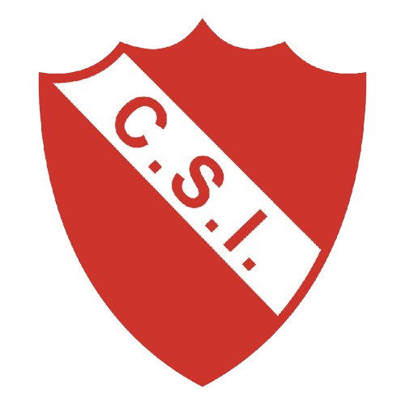

Club Sportivo Independiente
"El Rojo"
Fundado en 1920Estadio
Roberto Petit de Meurville
Categoría
Liga Pampeana - Primera A
Ciudad
General Pico, La Pampa
Resumen Institucional
El Club Sportivo Independiente es una de las instituciones polideportivas más importantes de la provincia de La Pampa, fundada el 20 de agosto de 1920. Reconocido a nivel provincial y nacional por sus logros deportivos, mantiene una constante participación en el fútbol de la Liga Pampeana.
Su clásico rival en la ciudad es Pico Fútbol Club, con quien disputó encuentros trascendentales a lo largo de la historia futbolística piquense.
Historia
Fundado en 1920, Sportivo Independiente creció al ritmo de la ciudad hasta convertirse en un referente en múltiples disciplinas. Posee una importante infraestructura social y deportiva y suma múltiples títulos de primera división en el ámbito regional.